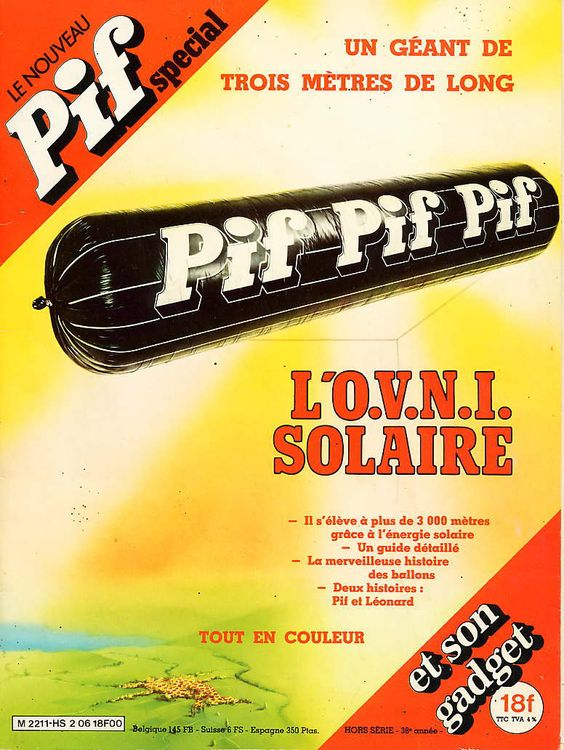

Le n° de Pif Gadget ce mois-ci, rééditant un succès de juillet
dernier : un grand ballon se gonflant au soleil, qui génèrera certains témoignages

2 ovnis stationnent au-dessus du cosmodrome de Baikonur,
Kazakhstan, URSS. L'un d'eux descend vers la plate-forme de lancement n° 1 tandis que l'autre se tient
près des habitations du centre spatial. Les portiques de la plate-forme de lancement souffriront de soudures clivées
et des rivets sembleront avoir été aspirés. Dans le complexe de logements, des milliers de fenêtres sont brisées ou
trouées. La base est fermée 2 semaines pour réparations.
A Nantes Château-Bougon, Loire Atlantique, plusieurs personnes
dont le personnel d'une tour de contrôle d'un aéroport apercevoir un point brillant dans le ciel L'enquète montre que des pilotes ont également aperçu cet objet brillant et qu'il s'agit probablement d'un ballon stratosphérique lancé par le CNES du site de Gap et dérivant et évoluant à 30000 ou 40000 m d'altitude poussé par les vents de sud-ouest après le larguage de sa charge utileGEPAN: PAN classé D.
A Saint Denis, Réunion, des personnes voient dans le ciel
1 forme sphérique dans un halo suivi d'un ensemble de points plus petits de couleur jaune orangé formant une trainée
lumineuse. Cet ensemble se dirige lentement en ligne droite du nord-est au sud-est. L'observation dure moins de 1 mn
et aucun bruit lié à ce phénomène n'est entendu D'après les descriptions du phénomène ces personnes ont probablement été témoins d'une rentrée atmosphériqueGEPAN: PAN classé B.
1er vol d'un spationaute français : Jean-Loup Chrétien.